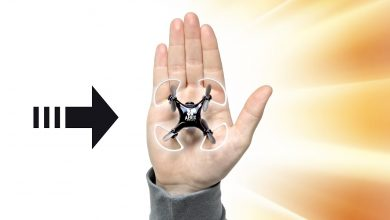

Introducing Microsoft Surface Studio
Feb 6, 2016
Guide to buying a used laptop computer from another person
Feb 6, 2016
10 Tips For New Drivers
Feb 6, 2016
Start your car with Apple Watch or Android Wear?! (Hyundai BlueLink)
Jan 6, 2017
How to Use Your Hyundai Factory Remote Start!
Jan 1, 2017
.jpeg)
bread medu vada recipe Hebbars Kitchen
Feb 6, 2016
.jpeg)
pav bhaji mumbai style pav bhaji
Jan 6, 2017
soya chunks cutlet recipe cutlet with soya
Jan 6, 2017
.jpg)
cheesy bread roll recipe veg stuffed bread roll recipe
Jan 6, 2017
vada pav recipe mumbai vada pav recipe
Nov 6, 2016
All
Computing
Electronics
Mobile
Top 5 - Computer Gadgets You Must Have
Feb 6, 2017
How To Spot A Fake iPhone
Feb 6, 2017
10 Things Amazon Echo Can Do That Apple's Siri Can't
Feb 6, 2017
Top 9 New Technology Future Inventions Gadgets Coming in 2017
Feb 6, 2017
Top 9 New Technology Future Inventions Gadgets Coming in 2017
Feb 6, 2017
Cheap Tablet Hybrid - Great Tech Deals
May 6, 2015
Apple MacBook Pro 15″ Touch Bar Unboxing & Review
April 6, 2015
13″ MacBook Pro 2016 Unboxing! What's New
Feb 6, 2015
Top 5 - Computer Gadgets You Must Have
Feb 6, 2017
10 Things Amazon Echo Can Do That Apple's Siri Can't
Feb 6, 2017
Google Home vs Amazon Echo - Which is Best?
Jan 6, 2017
Apple - September Event 2016
Nov 5, 2017
How To Spot A Fake iPhone
Feb 6, 2017

World's Smallest Video Drone!
May 6, 2016
Healthy & Quick Breakfast Ideas!
April 6, 2016
Samsung Galaxy S8 and S8+: Official Introduction
Mar 6, 2016